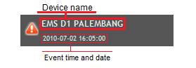

Welcome to MASEMON(Map-Assisted Network Element Monitoring)! This application provides you an intuitive and easy to use user interface to keep you 'in-touch' with your network devices. This guide allows you to learn the features of this application.
Easily Monitor your Network Devices
Main interface of this application is the map itself. Your devices and groups will be displayed on the map along with its UP/DOWN/RECOVER status. You can get your servers' health status and metrics with a few clicks only.
Legends
| Group icon. | |
 |
Device icon (UP). |
 |
Device icon (DOWN). |
| Device notification icon (UP). | |
| Device notification icon (DOWN). | |
| Device notification icon (THRESHOLD BREACHED). | |
 |
Device notification icon (RECOVER). |
Menus
| Sets the map to 'home' location. | |
 |
Shows the hierarchy of your devices and groups. |
 |
Opens the cacti console. |
| Lets you to authenticate and enables map editing. | |
| Logout from map editing-enabled interface. | |
| Shows you this guide. | |
 |
Shows you time and date. |
 |
Notify you if there are changes in device status or threshold breaches. |
Displaying Device Details
To display the device's less detailed information, just click the device's icon on the map.

To display the device's more detailed information, click 'Show Detail' on the information box. The associated graph and its timespan will be listed on the left pane.

Managing Devices
Adding Device
Adding a device to the map is easy. Right-click on any place you want and then click Add Device.
Editing Device
Right click on the device you want to edit and then click Edit Device.
Deleting Device
Right click on the device you want to delete and then click Delete Device.
Managing Groups
Managing groups is similar to managing devices.Adding Group
To add a group, right-click on any place you want and then click Add Group.
Editing Group
Right click on the group you want to edit and then click Edit Group.
Deleting Group
Right click on the group you want to delete and then click Delete Group.
Notifications
Notifications pane notifies you if there are non-UP hosts. Clicking an entry in the Notification pane will move the map to the device you click.
Tree
Tree pane shows you the hierarchy of your devices and groups. Clicking an entry in the Tree pane will move the map to the device you click.
Frequently Asked Question
-
Q : What is the main function of this application ?
A : This application provides you an intuitive and easy to use user interface to keep you 'in-touch' with your network devices.
-
Q : What is the meaning of the symbol on the map?
A : There are two types of element on the map. Devices and Groups. You can read the detail on 'Getting Started'.
-
Q : What is the difference between group and device?
A : A group can contains any devices and any groups. Group is intended for clustering devices. Device have to be contained by other group or root. Device is a representative of any element that monitored by cacti.
-
Q : What is the meaning of the red symbol on the map?
A : Those are any devices that have status down, threshold breached, or unknown.
-
Q : There are too many symbol on map, how can I look at any place closer?
A : You can double click or scroll with your mouse on that place. The other way is to navigate map with navigation control on the upper left of the map.
-
Q : Can I change the type of map?
A : Of course, you can select the type of map on the menu below 'Notifications' button.
-
Q : How to get status of any devices?
A : Left click on that device. Info baloon will pop up above that device.
-
Q : I want to see info detail by clicking 'show detail'.After choosing one info, why the form ask me the cacti password?
A : To show graph from Cacti, you have to login into cacti once. Once you login, you will not be asked anymore for this session.
-
Q : How to add, edit, or delete any devices or groups?
A : You have to login as admin to manipulate any elements on this application. You can see the guide on 'using this application' part of help
Developer
Telkom Internship Project
Left to right:
Ginanjar Fahrul Muttaqin - ginanjar.fahrul.m@gmail.com
Mohammad Rizky Adrian - moh.rizkya@yahoo.com
Adityo Jiwandono - jiwandono@arc.itb.ac.id
Teknik Informatika Institut Teknologi Bandung 2010